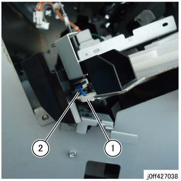
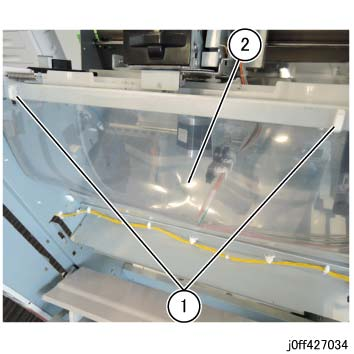
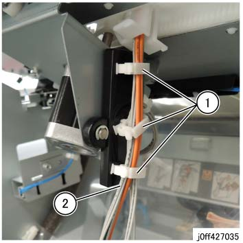
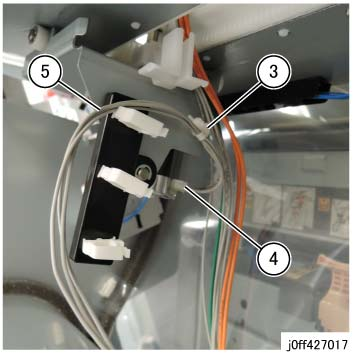
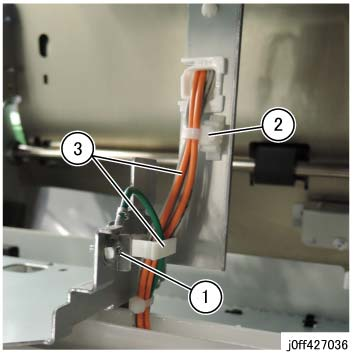
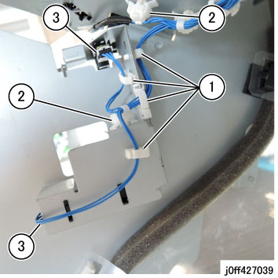
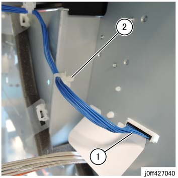
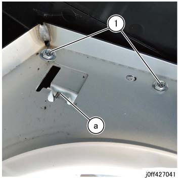
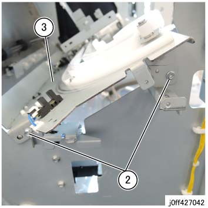

REP 27.5.2 Stapler Rail 组件 
参考 PL:PL 27.5
Removal

执行IOT关机步骤. 确认电源已关闭并拔掉电源插头.
拆卸 Compile 组件. (REP 27.1.2)
拆卸 Stapler Head 组件. (REP 27.6.1)
拆卸 线束 在前面. (图 1)
松开卡箍并拆除线束.
断开连接器.

(图 1) ff427038
拆卸线束 盖板 组件. (图 2)
释放 卡箍 (x2).
拆卸线束 盖板 组件.

(图 2) ff427034
拆卸 线束 at ...的底部 Stapler Rail 组件.
释放 卡箍 (x3). (图 3)
释放 线束. (图 3)

(图 3) ff427035
释放 Push Tie. (图 4)
拆卸 连接器. (图 4)
释放 线束. (图 4)

(图 4) ff427017
拆卸 线束 的 (SCC) Stapler Head 组件. (图 5)
拆卸 Earth 螺钉.
释放 Push Tie.
松开卡箍并拆除线束.

(图 5) ff427036
拆卸 线束 at ...的底部 Stapler Rail 组件. (图 6)
释放 卡箍 (x4) 和 拆卸 线束.
断开连接器（x2）.
释放 Push Tie (x2).

(图 6) ff427039
拆卸 线束 在后面. (图 7)
断开连接器.
释放 Push Tie 和 拆卸 线束.

(图 7) ff427040
拆卸 Stapler Rail 组件. (图 8)

Take 注意 of Hook (a). (图 8)
拆卸螺钉（x2） 在后面.

(图 8) ff427041
拆卸螺钉（x2） 在前面. (图 9)
拆卸 Stapler Rail 组件. (图 9)

(图 9) ff427042